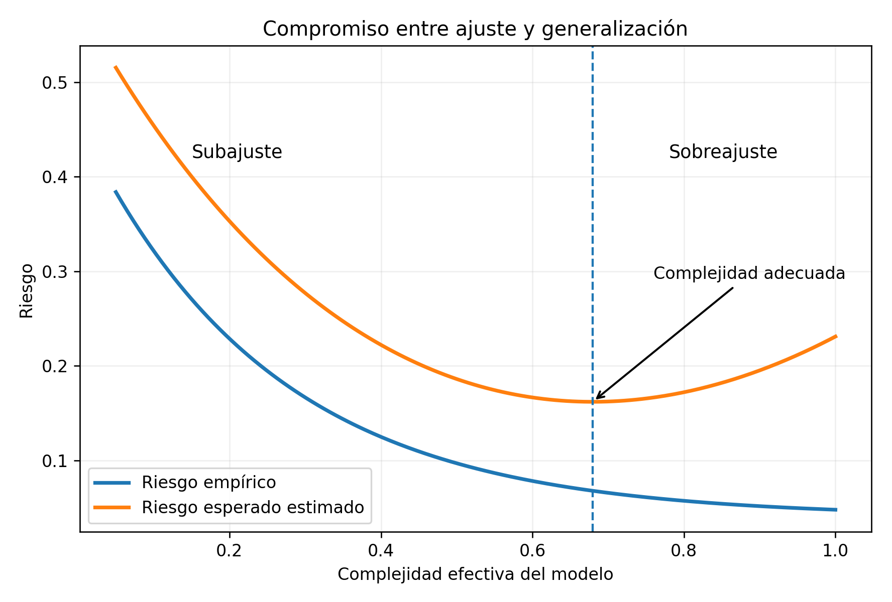

21 Teoría de generalización
Introducción
La finalidad del aprendizaje automático es construir modelos que funcionen con observaciones nuevas. La teoría de generalización estudia cuándo el desempeño observado en la muestra representa adecuadamente el riesgo sobre la población y cómo influyen el tamaño muestral, la complejidad del modelo y la regularización (Vapnik y Chervonenkis 1971; Valiant 1984; Shalev-Shwartz y Ben-David 2014).
La generalización es la capacidad de un modelo aprendido con una muestra de producir un riesgo bajo sobre observaciones nuevas generadas por la misma distribución.

Riesgo esperado y riesgo empírico
Para una función \(f\) y una pérdida \(L\), el riesgo esperado es
\[ R(f)=\mathbb{E}[L(Y,f(\mathbf{X}))]. \]
Dada una muestra de tamaño \(n\), el riesgo empírico es
\[ \widehat R_n(f)=\frac{1}{n}\sum_{i=1}^n L(y_i,f(\mathbf{x}_i)). \]
La diferencia
\[ R(f)-\widehat R_n(f) \]
se denomina brecha de generalización.
Minimización del riesgo empírico
El estimador ERM es
\[ \widehat f_{ERM}=\operatorname*{arg\,min}_{f\in\mathcal F}\widehat R_n(f). \]
Si el riesgo empírico aproxima uniformemente al riesgo esperado, entonces ERM generaliza.
Exceso de riesgo
Sea \(f^*\) el predictor óptimo y \(f^*_{\mathcal F}\) el mejor predictor dentro de \(\mathcal F\). Entonces
\[ R(\widehat f)-R(f^*)= [R(\widehat f)-R(f^*_{\mathcal F})]+[R(f^*_{\mathcal F})-R(f^*)]. \]
El primer término es error de estimación y el segundo error de aproximación.
Convergencia uniforme
Se busca controlar
\[ \sup_{f\in\mathcal F}|R(f)-\widehat R_n(f)|. \]
Si esta cantidad es menor que \(\varepsilon\), entonces
\[ R(\widehat f_{ERM})\le R(f^*_{\mathcal F})+2\varepsilon. \]
Desigualdad de Hoeffding
Si \(0\le L\le1\), para un predictor fijo,
\[ P(|R(f)-\widehat R_n(f)|\ge\varepsilon)\le2e^{-2n\varepsilon^2}. \]
Con probabilidad al menos \(1-\delta\),
\[ R(f)\le\widehat R_n(f)+\sqrt{\frac{\log(2/\delta)}{2n}}. \]
Ejemplo numérico de una cota de Hoeffding
Supóngase que un clasificador presenta un error empírico de (0.12) sobre (n=500) observaciones y se desea una garantía con (). La desviación de Hoeffding es
\[ \varepsilon = \sqrt{ \frac{ \log(2/\delta) }{ 2n } } = \sqrt{ \frac{ \log(40) }{ 1000 } } \approx 0.0607. \]
Por tanto, con probabilidad al menos (0.95),
\[ R(f) \leq 0.12+0.0607 = 0.1807. \]
La cota no afirma que el riesgo real sea exactamente (0.1807); establece un límite superior probabilístico bajo los supuestos indicados.
Clases finitas
Si \(|\mathcal F|=M\), una unión de eventos produce
\[ R(f)\le\widehat R_n(f)+\sqrt{\frac{\log(2M/\delta)}{2n}} \]
simultáneamente para todos los modelos. La penalización aumenta con \(\log M\) y disminuye con \(n\).
Aprendizaje PAC
PAC significa Probably Approximately Correct. Un algoritmo aprende una clase si para todo \(\varepsilon>0\) y \(\delta>0\) devuelve, con probabilidad al menos \(1-\delta\), un predictor cuyo error está a lo sumo \(\varepsilon\) del objetivo.
En el caso realizable, la complejidad muestral para una clase finita es del orden de
\[ \frac{\log M+\log(1/\delta)}{\varepsilon}. \]
En el caso agnóstico es del orden de
\[ \frac{\log M+\log(1/\delta)}{\varepsilon^2}. \]
Dimensión VC
La dimensión VC es el mayor número de puntos que una clase puede fragmentar, es decir, etiquetar de todas las formas binarias posibles.
- umbrales en la recta: VC igual a 1;
- intervalos: VC igual a 2;
- hiperplanos en \(\mathbb R^p\): VC igual a \(p+1\).
Función de crecimiento y lema de Sauer
La función de crecimiento \(\Pi_{\mathcal F}(n)\) cuenta el máximo número de etiquetaciones inducidas por la clase. Si la dimensión VC es \(d\),
\[ \Pi_{\mathcal F}(n)\le\sum_{j=0}^{d}\binom{n}{j}\le\left(\frac{en}{d}\right)^d. \]
Una cota típica es
\[ R(f)\le\widehat R_n(f)+C\sqrt{\frac{d\log(n/d)+\log(1/\delta)}{n}}. \]
Complejidad de Rademacher
La complejidad empírica es
\[ \widehat{\mathfrak R}_n(\mathcal F)=\mathbb E_{\boldsymbol\sigma}\left[\sup_{f\in\mathcal F}\frac1n\sum_{i=1}^n\sigma_i f(\mathbf x_i)\right], \]
donde \(\sigma_i\in\{-1,+1\}\). Mide la capacidad de la clase para ajustarse a ruido aleatorio (Bartlett y Mendelson 2002).
Una cota típica es
\[ R(f)\le\widehat R_n(f)+2\mathfrak R_n(\mathcal F)+\sqrt{\frac{\log(1/\delta)}{2n}}. \]
Regularización, norma y margen
La regularización restringe la clase efectiva. En modelos lineales, limitar \(\|\mathbf w\|_2\) reduce capacidad. En SVM, un margen grande puede producir cotas que dependen aproximadamente de
\[ \frac{R^2}{\gamma^2}, \]
donde \(R\) acota la norma de las entradas y \(\gamma\) es el margen.
Estabilidad algorítmica
Un algoritmo es estable si reemplazar una observación cambia poco la pérdida. Si
\[ |L(z,A(\mathcal D_n))-L(z,A(\mathcal D_n^{(i)}))|\le\beta_n, \]
y \(\beta_n\to0\), la influencia de una observación disminuye con \(n\). Los algoritmos regularizados suelen ser más estables. Esta relación fue formalizada, entre otros, por Bousquet y Elisseeff (2002).
PAC-Bayes
Las cotas PAC-Bayes consideran una distribución previa \(P\) y una posterior \(Q\) sobre modelos. La penalización depende de
\[ \sqrt{\frac{KL(Q\|P)+\log(1/\delta)}{n}}. \]
Un posterior cercano a una prior simple puede obtener una mejor garantía (McAllester 1999).
Selección de modelos
Comparar muchos modelos usando la misma validación puede sobreajustar el conjunto de validación. La validación cruzada anidada separa selección de hiperparámetros y estimación final del desempeño.
Cambio de distribución
Las garantías clásicas suelen suponer
\[ P_{train}=P_{test}. \]
Cuando esta igualdad falla pueden aparecer covariate shift, concept drift o cambios estructurales. En esos casos se requieren validación temporal, reponderación, monitoreo y actualización.
Modelos sobreparametrizados
Las redes modernas pueden tener más parámetros que observaciones y aun así generalizar. La complejidad efectiva depende también de normas, margen, optimización implícita, estructura de los datos y arquitectura.
Doble descenso
El error de prueba puede disminuir, aumentar cerca del umbral de interpolación y volver a disminuir en el régimen sobreparametrizado. Este comportamiento se denomina doble descenso y ofrece una explicación parcial de la generalización en modelos altamente sobreparametrizados (Belkin et al. 2019).
Cotas vacías
Una cota puede ser matemáticamente válida pero numéricamente inútil si supera el máximo posible del riesgo. Deben distinguirse validez formal y utilidad práctica.
Conexión con los algoritmos
- K-NN controla complejidad mediante \(k\).
- Árboles mediante profundidad y poda.
- Random Forest reduce varianza por promediación.
- SVM utiliza margen y norma.
- Redes neuronales emplean arquitectura, regularización, dropout y parada temprana.
Seudocódigo formal para selección con validación anidada
Algoritmo Validación-Cruzada-Anidada
Entrada:
muestra D, familia de modelos {f_λ : λ ∈ Λ},
particiones externas K_out e internas K_in
Salida:
estimación imparcial del riesgo de selección
1. Dividir D en K_out bloques externos D_1,...,D_{K_out}.
2. Para cada bloque externo r:
a) Definir entrenamiento externo D^{-r} y prueba externa D_r.
b) Para cada λ ∈ Λ:
i) estimar por validación interna
\widehat R_{in}(λ)
usando K_in particiones de D^{-r};
ii) seleccionar
\hat λ_r = argmin_{λ∈Λ} \widehat R_{in}(λ).
c) Ajustar f_{\hat λ_r} con todo D^{-r}.
d) Evaluar
\widehat R_r =
(1/|D_r|)\sum_{(x_i,y_i)∈D_r}
L(y_i,f_{\hat λ_r}(x_i)).
3. Devolver
\widehat R_{nested}
= (1/K_out)\sum_{r=1}^{K_out}\widehat R_r.Ejemplo en R
Ejercicios
- Distinga riesgo esperado y empírico.
- Calcule la cota de Hoeffding para \(n=500\) y \(\delta=0.05\).
- Explique la diferencia entre caso realizable y agnóstico.
- Determine la dimensión VC de umbrales, intervalos e hiperplanos.
- Explique qué mide la complejidad de Rademacher.
- Analice cómo la regularización mejora estabilidad.
- Diseñe una validación anidada para comparar regresión logística, SVM, Random Forest y una red neuronal.
- Explique por qué una cota puede ser vacía.
Resumen
Se estudiaron riesgo esperado, riesgo empírico, convergencia uniforme, Hoeffding, aprendizaje PAC, dimensión VC, complejidad de Rademacher, estabilidad y PAC-Bayes. También se analizaron regularización, selección de modelos, cambio de distribución y sobreparametrización.
Referencias del capítulo
Los fundamentos se apoyan en Vapnik y Chervonenkis (1971), Valiant (1984), Vapnik (1998), Shalev-Shwartz y Ben-David (2014), Mohri et al. (2018), Bartlett y Mendelson (2002) y McAllester (1999).